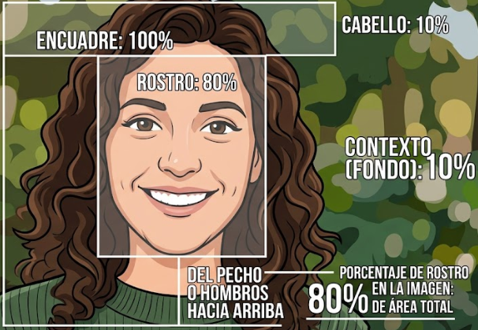

Linkedin y parra qué sirve?
Linkedin es una red social orientada al ámbito profesional y laboral. Permite crear un perfil donde podemos presentar nuestra formación, conocimientos, experiencia, proyectos y objetivos profesionales.
A diferencia de otras redes soliciales, Linkedin está pensado principalmente para conectar personas con interes profesionales y laborales, por lo que puede ser una herramienta muy útil para estudiantes que están buscando sus primeras oportunidades de trabajo.
Linkedin ?
Un perfil de Linkedin nos puede servir para:
No es necesario tener años de experiencia laboral para comenzar a utilizar Linkedin.
Un estudiante puede construir su perfil a partir de lo que ya sabe y de lo que ha realizado durante su formación. Por ejemplo, puede mostrar:
GitHub.
Por este motivo, Linkedin puede comenzar a construirse antes de conseguir el primer empleo.
La formación, los conocimientos y los proyectos que realizamos durante nuestra etapa como estudiantes también forman parte de nuestra experiencia y puede demostrar lo que somos capaces de hacer.
Para comenzar a construir la presencia profesional en Linkedln, es fundamental realizar una configuración incial adecuada. Esto garantiza que la cuenta sea segura, fácil de encontrar y transmita seriedad desde el primer momento.
Ingresar a Linkedln y registrase utilizando un correo electrónico de uso frecuente o profesional (Se recomienda evitar direcciones con apodos o nombres poco serios).
Completar el Nombre y Apellido completos tal como aparecen en documentos formales, evitando utilizar seudónimos, apodos o caracteres especiales.
Configurar la ciudad y país de residencia actual. Las empresas suelen filtrar candidatos según su ubicación geográfica para búsquedas locales o de trabajo remoto regional.
Seleccionar el área de interés principal (Por ejemplo: Desarrollo de software, Tecnología de la información, Educación, etc.). Esto ayuda al algoritmo a recomendar ofertas laborales relevantes.
Por defecto, Linkedln asigna una URL con letras y números aleatorios.
(ej. [linkedin.com/in/nombre-apellido-8392ab12] - (https://linkedin.com/in/nombre-apellido-8392ab12)).
Cómo personalizarla: Ir al perfil, seleccionar Editar URL y perfil público (Arriba a la derecha) y modificarla para que sea limpia y fácil de compartir en un CV o portfolio.
(ej.[linkedin.com/in/nombreapellido] - (https://linkedin.com/in/nombreapellido)
o [linkedin.com/in/nombre-apellido-dev] - (https://linkedin.com/in/nombre-apellido-dev)).
La foto de perfil es la primera impresión visual y el elemento que genera confianza incial. Un perfil con foto transmire cercanía, profesionalismo y autenticidad.
Utilizar un plano medio corto (Desde el pecho o hombros hacia arriba). El rostro debe ocupar entre el 60% y el 80% de la imagen.
Mantener contacto visual directo con la cámara y una expresión amigable o sonrisa natural.
Usar luz natural de frente (Por ejemplo, cerca de una ventana) evitando sombras marcadas en la cara.

Usar selfies casuales, fotos grupales, recortar a otras personas o subir imágenes de fiestas/eventos informales.
Utilizar filtros excesitos, avatares o logotipos en lugar de una foto personal real.
Usar fotos muy antiguas o de cuerpo entero donde el rostro no se distinga.
La imagen de portada (banner) es el espacio visual más grande del perfil. Sirve para reforzar la identidad profesional, destacar el área de especialización y transmitir el contexto de trabajo de un vistazo.
Propósito e impacto.Comunica tu área de interés o especialidad (Tecnología, diseño, educación, datos, etc.).
Evita mantener el fondo azul genérico de Linkedln, lo que demuestra interés y dedicación al perfil
Gráficos o ilustraciones relacionados con el sector profesional (ej. código para programadores, esquemas para diseño UX, datos o métricas para analistas).
La medida recomendada es 1584 x 396 píxeles. Archivo JPG o PNG de menos de 8 MB.
Unsplash / Pexels - Son bancos de imágenes gratuitas de alta calidad sin derechos de autor.
El titular es la frase de texto que aparece justo debajo del nombre. Es el elemento escrito más visible de todo Linkedln, ya que se muestra en los resultados de búsqueda, en las publicaciones y en los comentarios.
Posicionamiento (SEO) - Las palabras clave incluidas aquí determinan en qué búsquedas de reclutadores aparecerá el perfil.
Expresa sintéticamente qué hacés, qué problemas resolvés o en qué área te estás formando.
Opción A - Rol + Tecnologías / Herramientas + Valor:
[ Rol principal / Especialidad ] | [ Tecnologías o herramientas claves ] | [ Objetivo o valor que aportás ]Desarrollador Web Frontend | React, JavaScript, CSS3 | Creando interfaces accesibles y de alto rendimiento.Opción B - Enfoque Junior / Estudiante / En formación.
[ Estudiante o Rol en formación ] en [Área] | [ Habilidades principales ] | [ En búsqueda de Desafío profesional ]Estudiante de Ciencia de datos | Python, SQL, PowerBI | Apasionado por la transformación de datos en decisiones.
El Acerca de mí es la oportunidad de contar tu historia profesional en primera persona. Mientras que en CV suele ser rígido, esta sección permite dar contexto a tu trayectoria, tus intereses, tus proyectos y tus metas.
Se encuentra enAñadir sección.
En desarrollo 👨💻.